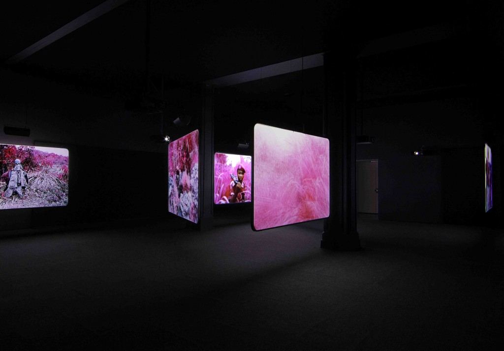
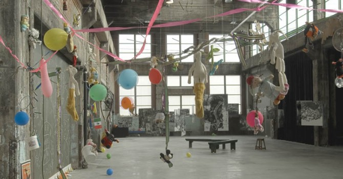
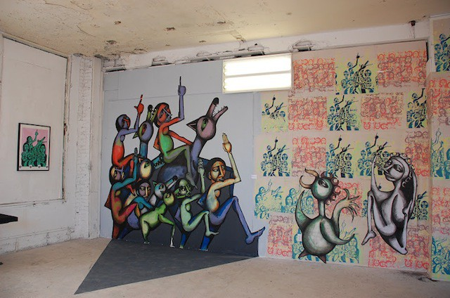
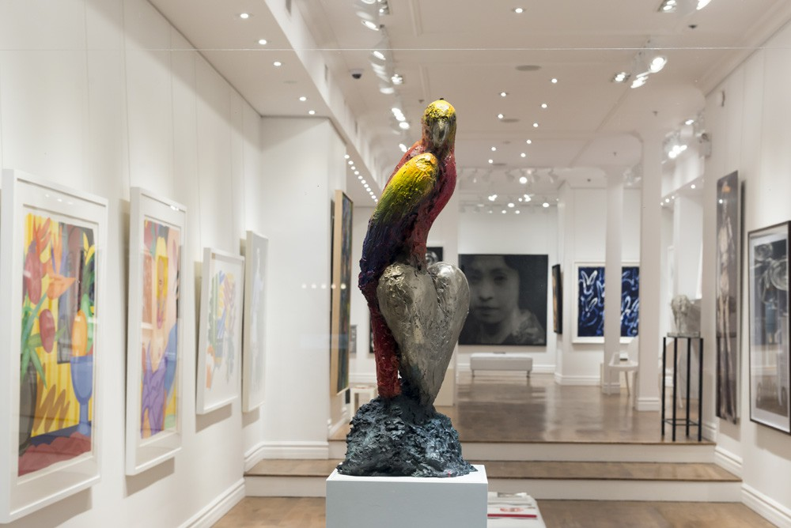
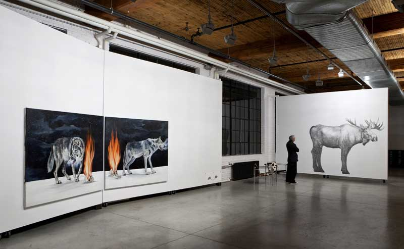

Art & Architecture
-

DHC fondation pour l’art contemporain
DHC Foundation for Contemporary art is another awesome not-for-profit which every year offers a handful of long-running exhibits for the public to enjoy, totally free. They’re housed in two beautiful heritage buildings in Old Montreal—get lost in the beautiful artwork and in the winding cobblestone streets of this historical neighbourhood.
Address: 451 & 465 St-Jean Street
-

Fonderie darling
Fonderie Darling is a unique visual arts centre under the umbrella of Montreal’s Quarter Ephemere, a group which reclaims abandoned industrial buildings in the city and converts the spaces into art venues. Their mission is to increase awareness of local art while at the same time drawing attention to these desolate urban spaces. Fonderie Darling is part art gallery, part artists studio block, and all heart.
Address: 475 Ottawa Street
-

Freshpaint Gallery
Founded by the International Convention of Graffiti Under Pressure, Freshpaint Gallery delivers exactly what it’s name evokes. All in the name of promoting urban culture, the exhibition space and special events aim to educate and engage patrons about the unique world of street art. Alongside the gallery, the group takes beautification into its own hands, creating art and temporary installations in vacant spaces around the city.
Address: 221 Ste Catherine E
-

Galerie de Bellefeuille
An all-Canadian gallery turned International, Helen and Jacques de Bellefeuille strive to showcase emerging Canadian talent alongside higher-tier artists from around the globe. It was founded in 1980 and has hosted many important events since. Artists like Damien Hirst and Sophie Ryder have seen the walls of de Bellefeuille. It’s become such an important space in the city, that in 2014 they took over a location across the street from the original gallery, dedicating it to 6,500 square feet of contemporary art.
Address: 451 & 465 St-Jean Street
-

DHC fondation pour l’art contemporain
DHC Foundation for Contemporary art is another awesome not-for-profit which every year offers a handful of long-running exhibits for the public to enjoy, totally free. They’re housed in two beautiful heritage buildings in Old Montreal—get lost in the beautiful artwork and in the winding cobblestone streets of this historical neighbourhood.
Address: 451 & 465 St-Jean Street